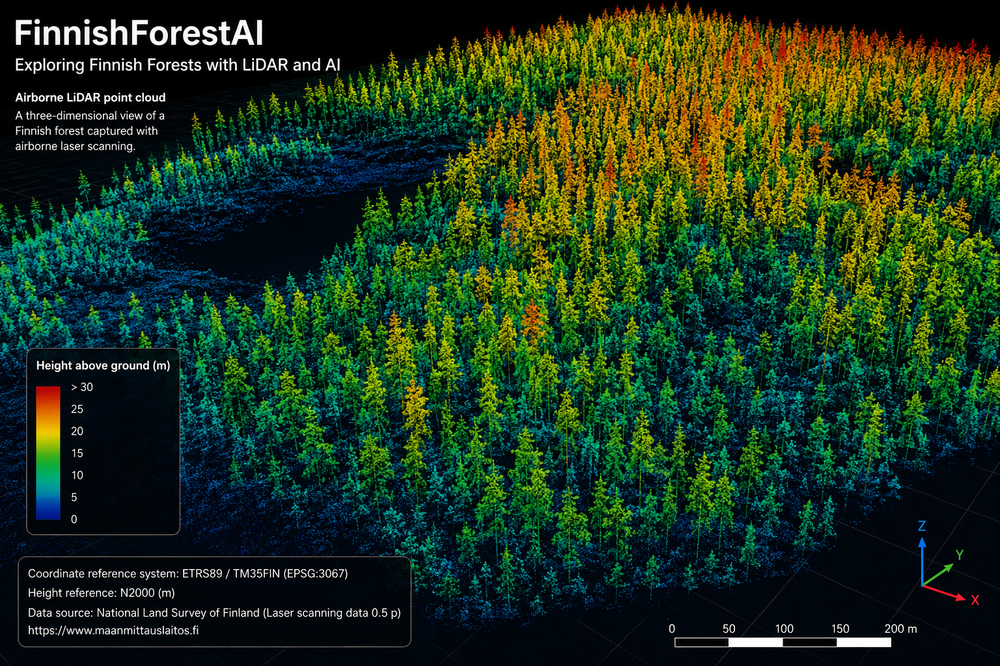

library(lidR)
las <- readLAS("data/raw/finnish_forest_tile.laz")
# Inspect the point cloud
las
# Normalize point elevations relative to terrain
las_normalized <- normalize_height(las, tin())
# Build a canopy height model
chm <- rasterize_canopy(
las_normalized,
res = 2,
algorithm = p2r()
)
plot(chm)FinnishForestAI: Exploring Finnish Forests with LiDAR and AI in R
R
LiDAR
forestry
geospatial
machine-learning
remote-sensing
An open and reproducible R workflow for transforming Finnish airborne LiDAR point clouds into forest-structure metrics, canopy models, and machine-learning features.

Forests are inherently three-dimensional. Tree crowns occupy different heights, branches overlap, terrain changes beneath the canopy, and vegetation is distributed vertically from the forest floor to the upper canopy. Traditional maps and aerial images capture only part of this structure. LiDAR (Light Detection and Ranging) adds another dimension by representing the landscape as a dense collection of three-dimensional points.
FinnishForestAI is an experimental open-source project that explores how Finnish airborne laser-scanning data can be transformed into reproducible forest-structure information and machine-learning features using R. The goal is not to replace operational forest inventory, but to demonstrate how open geospatial data, point-cloud processing, statistical computing, and AI can be combined in a transparent workflow.
Finland provides an especially interesting environment for this kind of work. The National Land Survey of Finland (NLS) publishes open laser-scanning data in which every observation contains three-dimensional coordinate information. Its open Laser scanning data 0.5 p product is derived by thinning denser 5 points/m² data to approximately 0.5 points/m² and is distributed in LAZ format [1]. The dataset uses the Finnish national ETRS89/TM35FIN coordinate reference system (EPSG:3067) and N2000 heights [1].
Understanding the LiDAR point cloud
A LiDAR point cloud can be thought of as a very large spatial table. At minimum, each point has coordinates:
\[(x, y, z)\]
where \(x\) and \(y\) represent horizontal position and \(z\) represents elevation.
LiDAR files may also contain information such as return number, intensity, scan characteristics, and point classification. These attributes are particularly valuable in forests because a laser pulse may interact with several layers of vegetation before reaching the ground.
The NLS product includes automatic point classifications that distinguish, among other classes, ground, low vegetation, medium vegetation, and high vegetation [1]. Ground points use class 2, while vegetation classes 3, 4, and 5 correspond to increasing height ranges above the ground surface [1].
These classifications make the point cloud much more than a geometric representation. They provide a starting point for separating terrain from vegetation and for deriving forest-structure information.
From elevation to tree and canopy height
One of the first challenges in forestry LiDAR analysis is that the raw \(z\)-coordinate represents absolute elevation, not tree height.
If a tree-top point is located at an elevation of 145 metres and the terrain beneath it is at 123 metres, the useful forestry quantity is approximately:
\[145 - 123 = 22\text{ m}\]
This motivates height normalization, where the terrain elevation is estimated from ground-classified points and then subtracted from each LiDAR point:
\[h_{AGL} = z_{point} - z_{ground}\]
The result is height above ground level rather than height above the national elevation reference.
In R, the open-source lidR package provides a comprehensive framework for reading, processing, analysing, and visualising airborne laser-scanning data, with a particular emphasis on forestry and ecological applications [4] [5].
A simplified workflow can look like this:
The exact terrain-normalization and rasterisation method should be selected according to point density, terrain, vegetation structure, and the analytical goal. A method that works well in one forest type may not be optimal in another.
Building a Canopy Height Model
A common product derived from normalized LiDAR is the Canopy Height Model (CHM).
A CHM converts the three-dimensional point cloud into a raster where each cell describes the estimated canopy height at that location. Instead of inspecting millions of individual points, the analyst obtains a spatial surface that can be mapped and analysed.
Conceptually, the workflow is:
LiDAR point cloud → ground model → normalized heights → canopy surface → Canopy Height Model
A CHM can support analyses of canopy structure, gaps, dominant vegetation height, and spatial variability. It can also provide features for downstream machine-learning tasks.
However, a CHM is still a derived representation. Its quality depends on factors such as point density, terrain modelling, interpolation, raster resolution, vegetation complexity, and the quality of the original classification.
Deriving forest-structure metrics
The point cloud can also be summarised statistically.
For a forest grid cell or analysis plot, useful LiDAR-derived variables may include:
- mean vegetation height;
- median height;
- height percentiles such as P25, P50, P75, and P95;
- maximum observed height;
- canopy cover above a selected threshold;
- point density;
- proportions of points in different vertical layers; and
- measures of vertical height variability.
The 95th percentile of vegetation height (P95) is particularly useful because it describes the upper canopy while being less sensitive than the single highest point to isolated outliers.
Instead of treating an entire forest as one observation, the study area can be divided into spatial cells. For each cell, FinnishForestAI can construct a feature table such as:
| Cell | Mean height | P95 height | Canopy cover | Point density |
|---|---|---|---|---|
| 1 | 11.8 | 21.4 | 0.71 | 0.49 |
| 2 | 8.9 | 17.2 | 0.53 | 0.52 |
| 3 | 14.1 | 24.8 | 0.82 | 0.47 |
This transformation is important because it connects a complex three-dimensional point cloud with familiar statistical and machine-learning workflows.
Where machine learning enters the workflow
LiDAR itself is not AI. It is a remote-sensing measurement technology.
AI becomes relevant when LiDAR-derived observations are used to build models for classification, prediction, segmentation, or decision support.
In FinnishForestAI, the R workflow is designed so that point-cloud processing produces structured features that can be passed to machine-learning tools such as ranger, an efficient Random Forest implementation in R.
A conceptual workflow is:
LiDAR → preprocessing → height normalization → forest metrics → machine-learning features → model
For example, a model could use variables such as P95 height, mean height, canopy cover, point density, and vertical variability. With appropriate independent reference data, these features could be evaluated for predicting forest attributes.
This distinction is important: estimates of properties such as timber volume, biomass, dominant height, stem density, or tree-species composition require suitable ground-truth or reference data and proper validation. A machine-learning model should not be treated as a forestry measurement simply because it can be trained on LiDAR-derived features.
Random Forest provides a useful baseline because it can model nonlinear relationships and interactions while remaining relatively easy to inspect. More advanced approaches could later include gradient boosting, deep learning, or architectures designed directly for three-dimensional point clouds.
Why Finland is an interesting test environment
LiDAR is already an important part of Finland’s forest-information infrastructure.
The Finnish Forest Centre describes a forest-resource inventory process that combines sample-plot measurements, airborne laser scanning, and aerial photography [3]. Laser scanning provides three-dimensional information about trees and terrain, while aerial photography contributes information useful for tasks such as tree-species interpretation [3].
The Forest Centre’s current remote-sensing inventory process uses a 16 × 16 metre grid for tree-stand interpretation and develops statistical models using field sample plots together with remote-sensing information [3].
This provides an important methodological lesson for AI projects: remote-sensing data become substantially more useful when they are combined with reliable reference measurements.
Finnish research has also demonstrated the long-standing role of airborne laser scanning in forest inventory. Studies have investigated area-based forest inventory, individual-tree features, and statistical estimation of forest variables using airborne laser-scanning data in Finnish and Nordic environments [6].
Why use R?
R has a mature ecosystem for spatial analysis, statistical modelling, reproducible research, and scientific communication.
For FinnishForestAI, several components are particularly useful:
- lidR for airborne LiDAR point-cloud processing;
- terra for raster operations;
- sf for vector spatial data;
- ranger for Random Forest modelling;
- ggplot2 for statistical visualisation; and
- Quarto for combining narrative, code, figures, methods, and references in a reproducible document.
The lidR package was explicitly designed for airborne laser-scanning analysis and integrates with the wider R geospatial ecosystem [4] [5].
This makes it possible to keep the analysis pipeline, methodological explanation, figures, and reproducibility information together rather than separating code from documentation.
Reproducibility with Quarto and GitHub
A central aim of FinnishForestAI is reproducibility.
A Quarto-based workflow allows the analysis to be documented as an executable scientific report. Code can be displayed alongside interpretation, while outputs such as canopy maps, height distributions, and model summaries can be regenerated from the underlying analysis.
The same project can be hosted publicly on GitHub, while GitHub Actions can render and publish the Quarto website automatically.
A simplified project structure is:
FinnishForestAI/
├── index.qmd
├── _quarto.yml
├── r/
│ └── forest_lidar_analysis.R
├── data/
├── outputs/
├── references.bib
└── .github/
└── workflows/
└── quarto-publish.ymlLarge .las and .laz files should generally not be stored directly in a Git repository. Instead, the repository can provide instructions for obtaining the original NLS data and can include small demonstration datasets or derived outputs where licensing and file size permit.
The NLS 0.5 p laser-scanning product is available as open data under CC BY 4.0, subject to attribution requirements [1] [2].
Important limitations
Working with open LiDAR does not remove the need for careful methodological choices.
First, the open NLS 0.5 p dataset is intentionally thinned from denser 5 points/m² laser-scanning data [1]. A density of approximately 0.5 points/m² can support many area-based analyses, but it provides less detailed representation of individual trees and fine canopy structure than denser point clouds.
Second, NLS point classifications are automatic. The product documentation explicitly notes that automatic classifications are not expected to be perfect and that users may need to filter or classify the data according to their own requirements [1].
Third, remote-sensing models must be validated. A visually convincing canopy map does not automatically imply that predictions of forestry variables are accurate.
Finally, forests are dynamic. Tree growth, harvesting, storms, management operations, and differences between acquisition dates can create discrepancies when LiDAR is combined with other spatial or forest-resource datasets.
Toward a Finnish forestry AI workflow
The next step for FinnishForestAI is to move from a general LiDAR-processing prototype toward a documented Finnish case study.
A future workflow could combine:
NLS LiDAR + Finnish Forest Centre forest-resource information + aerial or satellite imagery
followed by:
spatial harmonisation → feature engineering → model training → independent validation → interactive visualisation
Potential research questions include:
- How well do open 0.5 p LiDAR metrics describe canopy structure?
- Which height and density metrics are most informative for different forest conditions?
- How does grid resolution affect model performance?
- What is gained by combining LiDAR with optical imagery?
- How transferable are models between different Finnish forest regions?
- How closely can an open-source workflow reproduce forest-structure variables available from established inventory systems?
These questions move the project beyond simply visualising a point cloud. They connect geospatial computing, remote sensing, forest science, machine learning, and reproducible research.
Conclusion
FinnishForestAI demonstrates how open Finnish LiDAR data can provide a foundation for learning and experimenting with modern geospatial AI workflows.
The most important transformation is not from LiDAR directly to AI, but through a sequence of carefully defined analytical steps:
3D points → terrain → normalized vegetation heights → forest metrics → spatial features → validated models
Finland’s open geospatial infrastructure makes it possible to explore these methods using real national datasets, while R provides a strong environment for point-cloud processing, statistical modelling, and reproducible reporting.
For an open-source project, this combination is particularly valuable: the data source is documented, the analytical decisions can be inspected, the code can be reproduced, and model outputs can be evaluated rather than treated as black-box predictions.
FinnishForestAI is therefore best understood as a bridge between LiDAR remote sensing, reproducible geospatial software, and AI-assisted forest analysis.
References
[1] National Land Survey of Finland. Laser scanning data 0.5 p. Product description. https://www.maanmittauslaitos.fi/en/maps-and-spatial-data/datasets-and-interfaces/product-descriptions/laser-scanning-data-05-p
[2] National Land Survey of Finland. Publication rights. Open geospatial datasets and CC BY 4.0 licensing. https://www.maanmittauslaitos.fi/en/about-nls/organisation/publications-and-brochures/publication-rights
[3] Finnish Forest Centre. Collection of forest resource information. https://www.metsakeskus.fi/en/open-forest-and-nature-information/collection-of-forest-resource-information
[4] Roussel, J.-R., Auty, D., Coops, N. C., Tompalski, P., Goodbody, T. R. H., Sánchez Meador, A., Bourdon, J.-F., de Boissieu, F., & Achim, A. (2020). lidR: An R package for analysis of Airborne Laser Scanning (ALS) data. Remote Sensing of Environment, 251, 112061. https://doi.org/10.1016/j.rse.2020.112061
[5] Roussel, J.-R., Goodbody, T. R. H., & Tompalski, P. The lidR package: A guide to the lidR package. https://r-lidar.github.io/lidRbook/
[6] Kauranne, T., Pyankov, S., Junttila, V., Kedrov, A., Tarasov, A., Kuzmin, A., Peuhkurinen, J., Villikka, M., Vartio, V.-M., & Sirparanta, S. (2017). Airborne Laser Scanning Based Forest Inventory: Comparison of Experimental Results for the Perm Region, Russia and Prior Results from Finland. Forests, 8(3), 72. https://doi.org/10.3390/f8030072